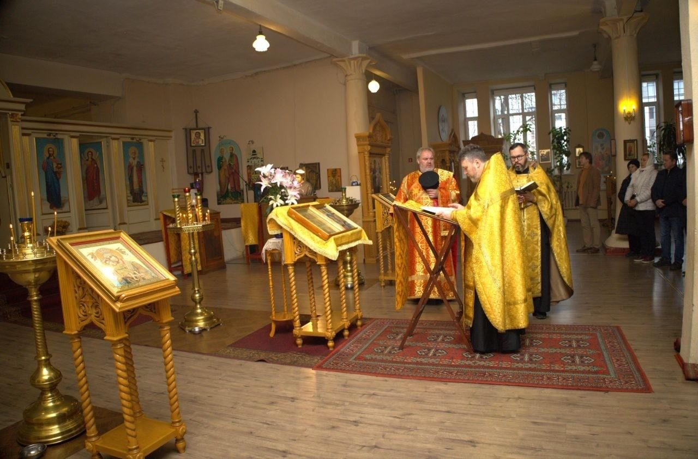

Ο ναός αποτελεί σταθερό χώρο συνάντησης των Ελλήνων της Αγίας Πετρούπολης. Οι ακολουθίες για τις εθνικές επετείους τελούνται σε συνεργασία με το Γενικό Προξενείο της Ελλάδος (ιστότοπος προξενείου) και με τη συμμετοχή του Γενικού Προξενείου της Κυπριακής Δημοκρατίας (ιστότοπος προξενείου)· διαλέξεις και κινηματογραφική λέσχη οργανώνει η Πολιτιστική και Εκπαιδευτική Εταιρεία των Ελλήνων της Αγίας Πετρούπολης (greekspb.com).

25 Οκτωβρίου 2026 · 12:00
Θεία Λειτουργία και Δοξολογία στα ελληνικά για την εθνική εορτή του «Όχι»
Την Κυριακή ΚΑ΄ των Επιστολών (μνήμη των Αγίων Πατέρων της Ζ΄ Οικουμενικής Συνόδου), παραμονή της εθνικής εορτής, τελέστηκαν Θεία Λειτουργία και Δοξολογία στα ελληνικά. Λειτούργησαν ο προϊστάμενος πρωτοπρεσβύτερος Βλαδίμηρος Γκοντσαρένκο και ο ιερέας Μαξίμ Νικούλιν (και οι δύο διδάσκουν στην Πνευματική Ακαδημία)· έψαλε η χορωδία του ναού. Παρέστησαν μέλη της ελληνικής κοινότητας, υπάλληλοι των προξενείων (Ελλάδος και Κύπρου) και ενορίτες. Ο π. Βλαδίμηρος τόνισε ότι η εορτή είναι εθνική για την Ελλάδα και την Κύπρο, αλλά και κοντινή σε όλους και ενώνει τους λαούς μας· στα γεγονότα που τιμώνται φάνηκε η προστασία της Παναγίας. Μετά την ακολουθία η συντροφιά συνεχίστηκε με τσάι.
24 Ιουλίου 2026 · 19:30
Κινηματογραφική λέσχη: «Ευτυχία στην Αθήνα» (1955)
Η πρώτη ταινία του Μιχάλη Κακογιάννη στο πρωτότυπο με ρωσικούς υπότιτλους. Πριν την προβολή ο Αλεξάντρ Ντανίλοφ μίλησε για τον σκηνοθέτη του «Ζορμπά», της «Στέλλας» και της «Ηλέκτρας». Διοργάνωση: Ελληνική Κοινότητα Αγίας Πετρούπολης.
7 Ιουνίου 2026 · 12:00
Διάλεξη «Η Ιερά Μονή Αγίου Παντελεήμονος — κέντρο της ρωσικής ορθοδοξίας στο Άγιον Όρος»
Δεύτερη διάλεξη του κύκλου «Η Χάρις του Άθω». Ομιλητής: Σεργκέι Λεονίντοβιτς Μπρόβκο.

1 Ιουνίου 2026
Γιορτή για την Παγκόσμια Ημέρα του Παιδιού
Οικογενειακή συνάντηση με προβολή του κινούμενου σχεδίου «Οι 12 άθλοι του Αστερίξ», φαγητό, παιχνίδια και κουβέντα. Ευχαριστίες στον π. Βλαδίμηρο για τη φιλοξενία και στον Εμμανουήλ Παπουτσόγλου για το κέρασμα.
23 Μαΐου 2026 · 19:30
Κινηματογραφική λέσχη: «Ο Λοχαγός Κορέλι»
Ταινία για τα γεγονότα του 1943 στην Κεφαλονιά, με ρωσική μεταγλώττιση και ελληνικούς υπότιτλους· συζήτηση μετά την προβολή. Ελεύθερη είσοδος.
17 Μαΐου 2026 · 12:00
Ημέρα Εθνικής Μνήμης της Γενοκτονίας των Ελλήνων του Πόντου
Μνημόσυνο υπέρ αναπαύσεως των θυμάτων, που διοργάνωσε το Γενικό Προξενείο της Ελλάδος σε συνεργασία με τον πρωτοϊερέα Βλαδίμηρο Γκοντσαρένκο· ακολούθησε σύντομη εκδήλωση μνήμης.
22 Μαρτίου 2026 · 12:00
Δοξολογία για την Εθνική Παλιγγενεσία
Πανηγυρική δοξολογία για την επέτειο της Ελληνικής Ανεξαρτησίας, χοροστατούντος του π. Βλαδίμηρου, και παραδοσιακό τσάι μετά την ακολουθία.
15 Φεβρουαρίου 2026 · 12:00
Διάλεξη «Το Ρωσικό Σκητάριο του Αγίου Ανδρέα στο Άγιον Όρος»
Πρώτη διάλεξη του κύκλου «Η Χάρις του Άθω» μετά την πανηγυρική ακολουθία. Γλώσσα: ρωσικά, ελεύθερη είσοδος.

18 Μαΐου 2025
Μνημόσυνο την παραμονή της Ημέρας Μνήμης της Γενοκτονίας των Ελλήνων του Πόντου και της Μικράς Ασίας
Η ακολουθία τελέστηκε στα ελληνικά και στα εκκλησιαστικά σλαβικά από τον π. Βλαδίμηρο. Παρέστησαν εκπρόσωποι του Γενικού Προξενείου της Ελλάδος, μέλη της κοινότητας και ενορίτες. Στο τσάι ακούστηκαν χαιρετισμοί του Γενικού Προξένου Δημήτριου Σπάρου και του προέδρου της κοινότητας Ευστράτιου Σιουρδάκη· οι παρευρισκόμενοι μοιράστηκαν οικογενειακές ιστορίες.
27 Οκτωβρίου 2019
Θεία Λειτουργία στα αρχαία ελληνικά την παραμονή της 28ης Οκτωβρίου
Τη Λειτουργία τέλεσε ο π. Βλαδίμηρος· παρέστησαν οι Γενικοί Πρόξενοι της Ελλάδος Σπυρίδων Βούλγαρης (προξενείο Ελλάδος) και της Κύπρου Δημήτριος Άσσος (προξενείο Κύπρου). Έψαλαν η χορωδία του ναού και φοιτητές της Θεολογικής Ακαδημίας από την Κύπρο και τη Συρία.
25 Μαρτίου 2018 · 10:00
Θεία Λειτουργία στα ελληνικά για την Εθνική Εορτή της 25ης Μαρτίου
Θεία Λειτουργία στα ελληνικά, σε διοργάνωση του Γενικού Προξενείου της Ελλάδος σε συνεργασία με ιερέα του ναού.